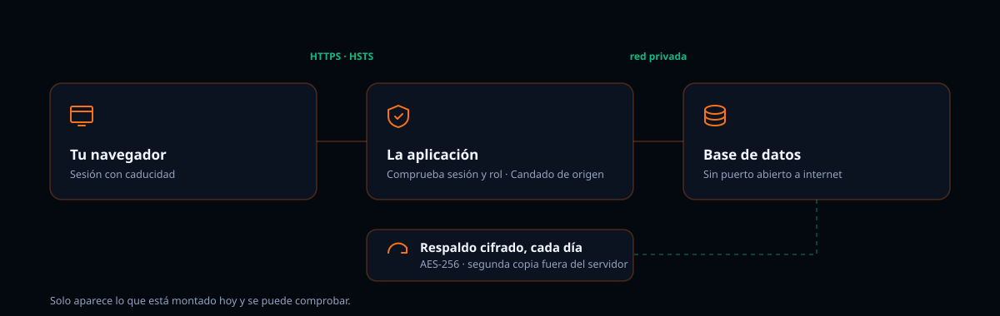

Cada uno se puede verificar desde fuera o está en el código.
Todo viaja por HTTPS. Los dos dominios declaran Strict-Transport-Security
con un año de vigencia, subdominios incluidos y en la lista de precarga: el
navegador se niega a conectarse sin cifrar aunque alguien lo intente.
Se guarda un derivado con scrypt, que es lento a propósito y consume
memoria para que probar contraseñas a lo bruto salga caro. Cada una lleva su
propia sal aleatoria. La comparación es de tiempo constante, y el inicio de
sesión tarda lo mismo exista la cuenta o no, para no delatar cuáles existen.
Cada madrugada se genera un volcado completo, cifrado con AES-256. Se hace en tubería: el archivo sin cifrar nunca llega a tocar el disco. Se conservan siete días en rotación y una máquina distinta recoge una copia cada mañana, así que un fallo del servidor no se lleva los respaldos por delante.
El acceso se da por persona con tres papeles: administrador, contador y cajero. Todas las operaciones del servidor exigen sesión válida, y hay un candado que rechaza a quien intente hablar con el servidor saltándose la aplicación.
La aplicación declara una política de contenido que parte de negarlo todo y solo abre lo imprescindible. No se puede incrustar en otra página, no se carga código de sitios ajenos y el navegador no adivina tipos de archivo.
Los accesos y los cambios sobre facturas y cobros quedan anotados con fecha. Sirve para reconstruir qué ocurrió si algo no cuadra.
Cuentas, clientes, proveedores, cobros, pagos, diario y transacciones se exportan a CSV desde el plan Pro. Irte no debería costarte los datos.
Preferimos que lo sepas por nosotros y no cuando lo necesites.
Si tu contador o tu socio necesitan un detalle que no está aquí, pregúntanos y te respondemos con lo que haya, no con lo que suene bien.
Preguntar por WhatsApp